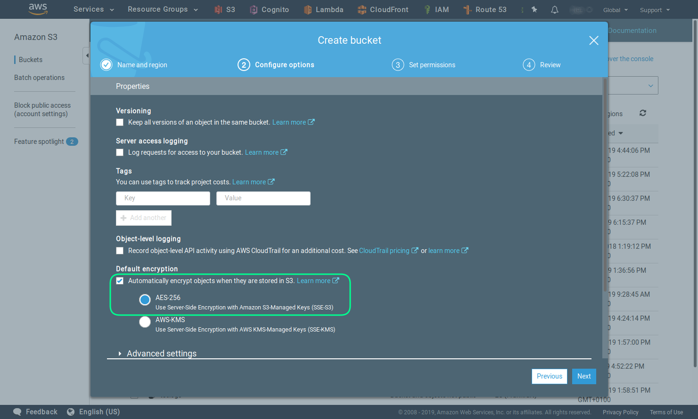
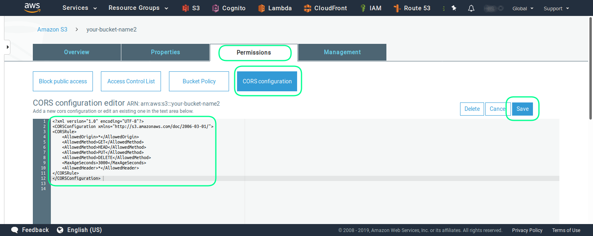
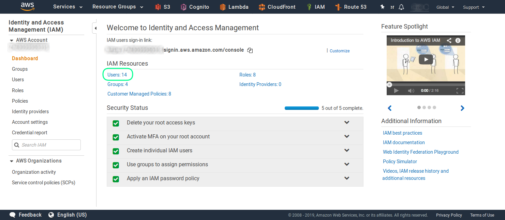
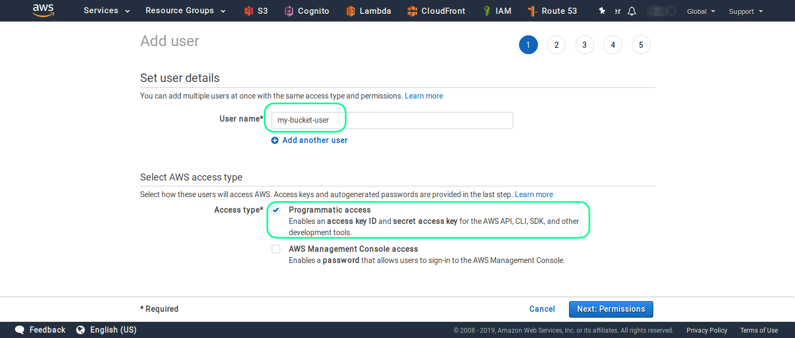
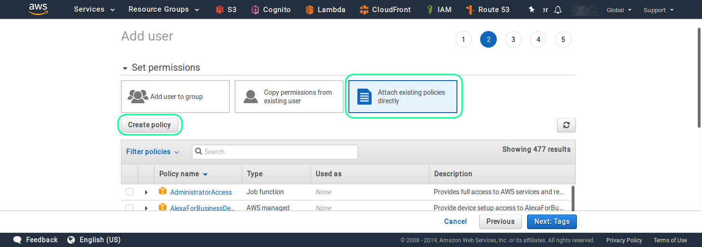
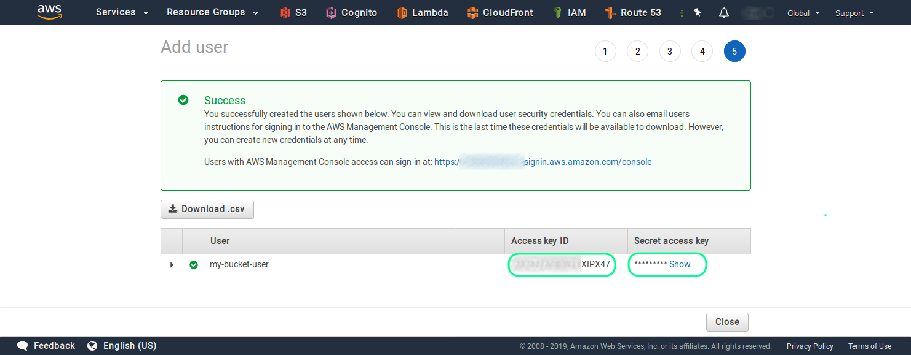
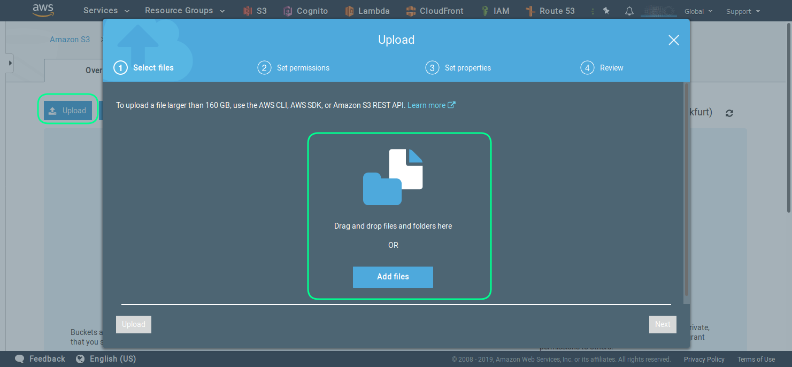
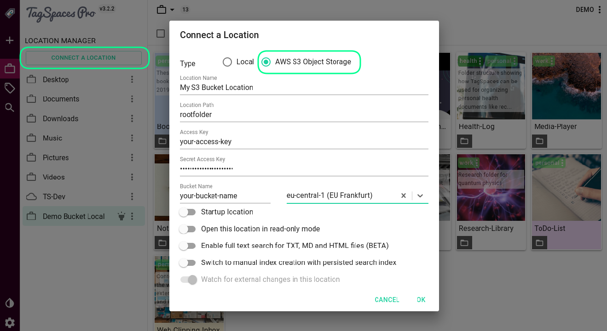

Cloud Locations in TagSpaces PRO based on AWS S3
Table of Contents
- Motivation
- Step 1 - Create a bucket in AWS S3
- Step 2 - Set the CORS settings of the bucket
- Step 3 - Create user for accessing the bucket.
- Step 4 - Upload files to the bucket
- Step 5 - Create cloud location in TagSpaces PRO
Motivation
TagSpaces PRO provides the ability to connect AWS S3 compatible buckets as locations. This offers many new capabilities and use cases.
Step 1 - Create a bucket in AWS S3
In order to create a AWS S3 bucket you have to go the Amazon Web Services website and register an account there. Once you are register and logged in go the services section and choose from there the S3, as shown in the next screenshot

And then in order to create a new bucket choose the Create Bucket button.

On the next screen you can choose the name of the bucket and the AWS region for the hosting. Be careful by choosing the name of the bucket, because a later rename is not possible.

Activating the encryption is an optional, but recommended step.
Note that this is a server side and not an end to end encryption.

Leave the default setting for access.

Review the settings and click the Create bucket button.

Once you have successfully created the bucket you should see the following screen.

Step 2 - Set the CORS settings of the bucket
This is an optional step, needed only if you want to access the bucket from TagSpaces Enterprise edition.

The XML config, can be copied from the section bellow.
<?xml version="1.0" encoding="UTF-8"?>
<CORSConfiguration xmlns="http://s3.amazonaws.com/doc/2006-03-01/">
<CORSRule>
<AllowedOrigin>*</AllowedOrigin>
<AllowedMethod>GET</AllowedMethod>
<AllowedMethod>HEAD</AllowedMethod>
<AllowedMethod>PUT</AllowedMethod>
<AllowedMethod>DELETE</AllowedMethod>
<MaxAgeSeconds>3000</MaxAgeSeconds>
<AllowedHeader>*</AllowedHeader>
</CORSRule>
</CORSConfiguration>
You can remove the PUT and DELETE lines, if you want to disable the writing and deleting operation from TagSpaces Enterprise.
It is recommended to put in the AllowedOrigin line, the domain from which you will access this bucket. E.g.: https://example.com
Step 3 - Create user for accessing the bucket.
Accessing the bucket with the credentials from your main account is not recommended. That's in this section we will guide through the process of user creation in the AWS IAM service. After successfully creating the user here, you will be able to use it for accessing the bucket from TagSpaces.
As first step the AWS IAM service should be opened.

Here you can click on the Users section, ash shown in the screenshot. 
Then you have to click on the Add user button, in order to start the user creation process.

And enter the name and select the type of access for this user. In order to use this user for API call, you have to enable the Programmatic access. 
In the next steps you have to set the permission for this user, by creating a custom policy. Please select the Attach existing policies directly and then click on the Create policy button. 
In newly opened browser tab with the policy editor, click on the JSON section.

There you can enter and adjust your policies. The following JSON snipped, is a policy for a user who can just list and retrieve object (read-only user) from the your-bucket-name bucket. You should adjust the name of the bucket to suite your setup.
Policy for read-only user:
{
"Version": "2012-10-17",
"Statement": [
{
"Sid": "VisualEditor0",
"Effect": "Allow",
"Action": [
"s3:ListBucket",
"s3:GetObject"
],
"Resource": [
"arn:aws:s3:::your-bucket-name",
"arn:aws:s3:::your-bucket-name/*"
]
},
{
"Sid": "VisualEditor1",
"Effect": "Allow",
"Action": "s3:GetAccountPublicAccessBlock",
"Resource": "*"
}
]
}
Policy for user with admin/write access:
{
"Version": "2012-10-17",
"Statement": [
{
"Sid": "VisualEditor0",
"Effect": "Allow",
"Action": [
"s3:ReplicateObject",
"s3:GetObjectAcl",
"s3:GetObjectVersionAcl",
"s3:PutObjectTagging",
"s3:DeleteObject",
"s3:GetBucketWebsite",
"s3:GetBucketNotification",
"s3:GetReplicationConfiguration",
"s3:ListMultipartUploadParts",
"s3:PutObject",
"s3:GetObject",
"s3:RestoreObject",
"s3:ListBucket",
"s3:GetBucketPolicy",
"s3:GetObjectVersionTorrent",
"s3:AbortMultipartUpload",
"s3:GetBucketRequestPayment",
"s3:GetObjectTagging",
"s3:GetMetricsConfiguration",
"s3:PutObjectAcl",
"s3:GetBucketPublicAccessBlock",
"s3:ListBucketMultipartUploads",
"s3:PutObjectVersionTagging",
"s3:GetBucketVersioning",
"s3:GetBucketAcl",
"s3:PutInventoryConfiguration",
"s3:GetObjectTorrent",
"s3:GetBucketCORS",
"s3:GetBucketLocation",
"s3:ReplicateDelete",
"s3:GetObjectVersion"
],
"Resource": [
"arn:aws:s3:::your-bucket-name",
"arn:aws:s3:::your-bucket-name/*"
TBD
]
},
{
"Sid": "VisualEditor1",
"Effect": "Allow",
"Action": "s3:GetAccountPublicAccessBlock",
"Resource": "*"
}
]
}
Note: The list of the action is only a suggestion, the action can be significantly reduced, to just these which are really needed for your setup.
Once you are ready and have attached the newly created policy to the user, you can finalize the process. On the last screen you will see the access key ID and the secret access key of the just created user. 
Step 4 - Upload files to the bucket
The easies way to upload files to your bucket is to use the build upload functionality, as seen in the next screenshot. But first you should create a folder in the bucket, which will serve as a root folder. You can name if for example rootfolder.

Now you can upload files using the web interface.

Alternatively you can use the AWS CLI (command line tools), with the following command.
aws s3 sync local-bucket-folder s3://your-bucket-name/rootfolder
This will sync all files and folder from your local folder called local-bucket-folder to the sub folder with the name rootfolder in the bucket your bucket your-bucket-name
You can find out how what is AWS CLI and how to install it for your operating system from this link.
Step 5 - Create cloud location in TagSpaces PRO
Start TagSpaces and click on the Connect a location button from the locations section. Then you should select the AES S3 Object Store radio button, as shown in the following screenshot.

Here you should enter the following parameters:
- Location Name - this is a free text with which you will refer your location in this TagSpaces installation
- Location Path - is the name of the root folder from the location we have previously create
- Access Key - is the key of the IAM user
- Secret Access Key - is the secret key of the IAM user
- Bucket Name - self explaining ...
- Region - is the region of hosting for your bucket
Once you click OK the location will be create and its content should be listed in TagSpaces.
There are some advanced settings with can be useful for S3 locations.
- Open this location in read-only mode - this will switch the UI interface of TagSpaces in readonly mode. It is particularly useful for location to which the IAM user has only read-only access.
- Switch to manual index creation with persistent index - this option will disable the indexing of the location on its opening. Instead it will try to load the previously create index file. This is useful for large locations with many files, where the initial indexing could take a lot of time.